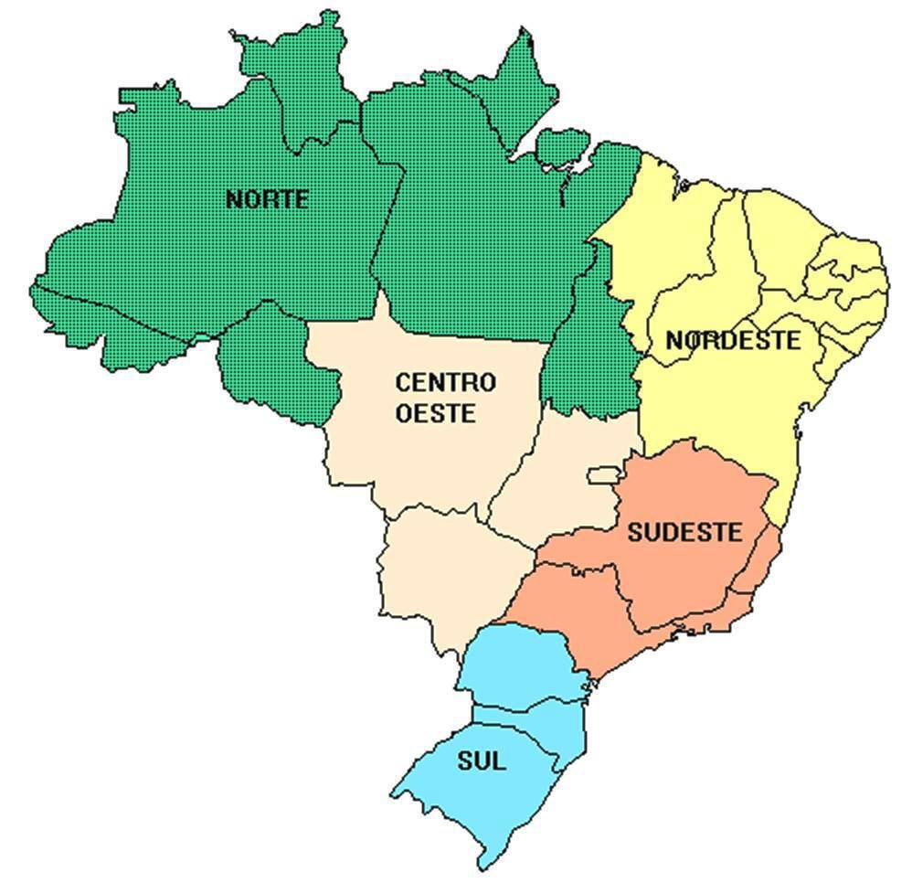
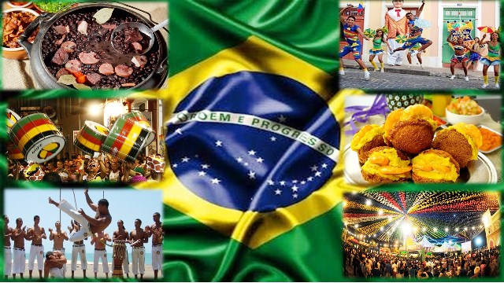
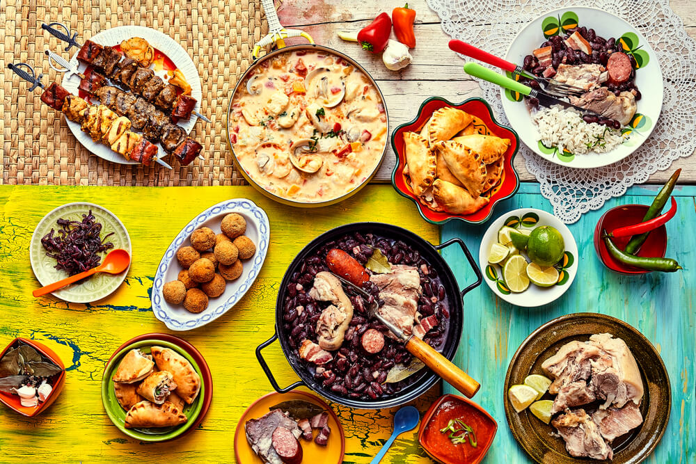

Morda a Borda
Não há limites para uma alimentação saudável.
Início •
Regiões
(Norte •
Nordeste •
Centro-Oeste •
Sul •
Sudeste) •
Sobre Nós •
Referências
Regiões

Quando falamos em regiões do Brasil,
fazemos referência ao agrupamento
de unidades federativas com características semelhantes.
O Brasil é
dividido em cinco regiões atualmente.

A cultura de um povo está intimamente ligada com seus costumes alimentares.
Conhecer a maneira
que se alimenta é uma forma de conhecer alguém. Dessa
forma, quando se trata de fazer
turismo, não podemos deixar de fora as
manifestações culinárias mais populares
em cada região, pois assim teremos
uma verdadeira experiência de imersão.
Experimentar as comidas típicas é
uma grande aventura.

Nossa culinária é rica, diversificada, cheia de nuances e muito saborosa!
Pelo fato do país ser tão grande,
existem alguns pratos populares em um
estado ou região que podem ser pouco ou quase nada conhecidos em outra região.
© Airton Mesquita, Técnico em Nutrição e Dietética, 2023; IV FCAC
(Feira de Ciências, Arte e Cultura); EEEP Leonel de Moura Brizola.